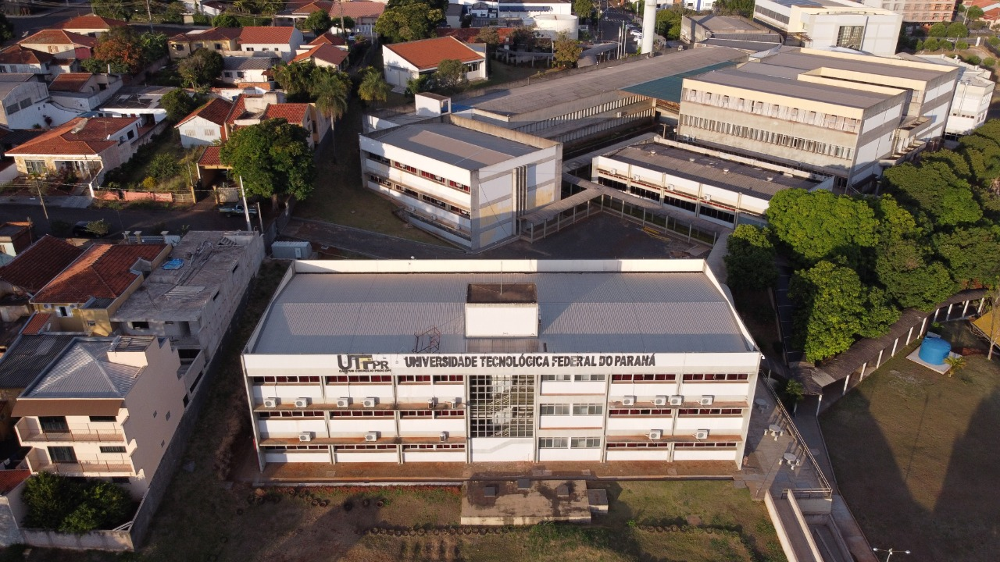
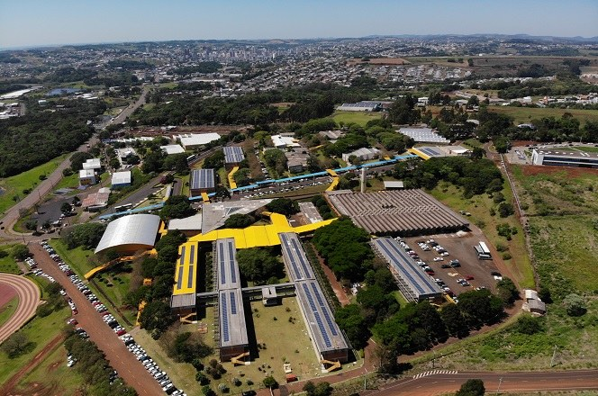

-
Tecnologia em Análise e Desenvolvimento de Sistemas -
Cornélio Procópio | Pato Branco | Ponta Grossa
Período Noturno - 03 anos de duração
-
Link de Acesso: ADS - UTFPR
- =-=-=-=-=-=-=-=-=-=-=-=-=-=-=-=-=-=-=-=-=-=-=-=-=-=-=-=-=-=-=-=
-
Engenharia de Computação -
Cornélio Procópio | Apucarana | Curitiba | Pato Branco | Toledo
Período Diurno - 05 anos de duração
-
Link de Acesso: Engenharia da Computação - UTFPR
- =-=-=-=-=-=-=-=-=-=-=-=-=-=-=-=-=-=-=-=-=-=-=-=-=-=-=-=-=-=-=-=
-
Engenharia de Software -
Cornélio Procópio | Dois Vizinhos
Período Noturno - 04 anos de duração
-
Link de Acesso: Engenharia de Software - UTFPR
- =-=-=-=-=-=-=-=-=-=-=-=-=-=-=-=-=-=-=-=-=-=-=-=-=-=-=-=-=-=-=-=
-
Ciência da Computação -
Campo Mourão | Medianeira | Ponta Grossa | Santa Helena
Período Integral - 04 anos de duração
-
Link de Acesso: Ciência da Computação - UTFPR
- =-=-=-=-=-=-=-=-=-=-=-=-=-=-=-=-=-=-=-=-=-=-=-=-=-=-=-=-=-=-=-=
-
Sistema de Informação -
Curitiba | Francisco Beltrão
Período Integral - 04 anos de duração
-
Link de Acesso: Sistemas de Informação - UTFPR
- =-=-=-=-=-=-=-=-=-=-=-=-=-=-=-=-=-=-=-=-=-=-=-=-=-=-=-=-=-=-=-=
-

Câmpus Cornélio Procópio

Câmpus Pato Branco